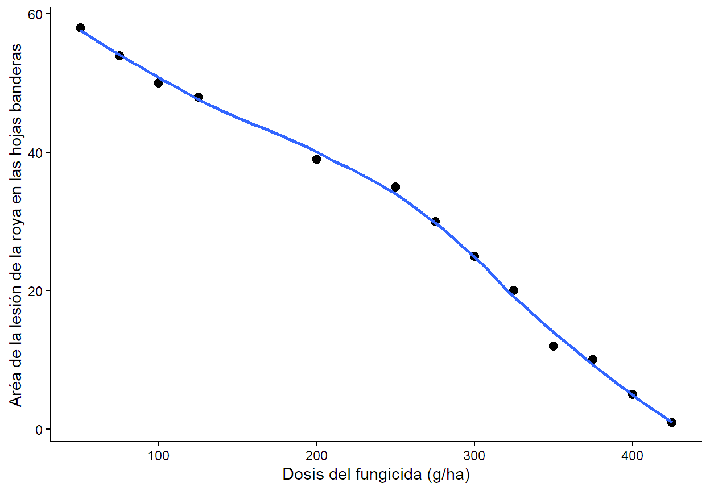
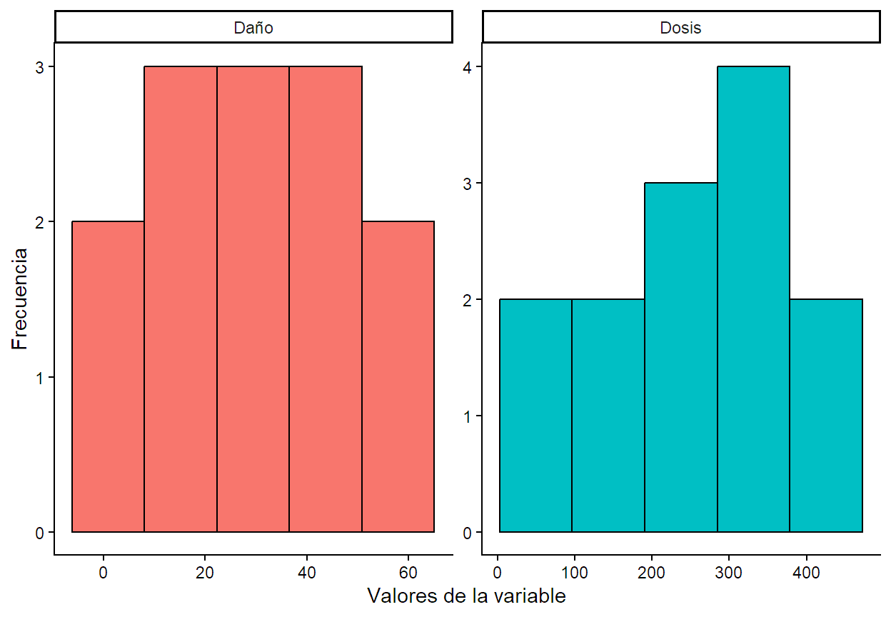
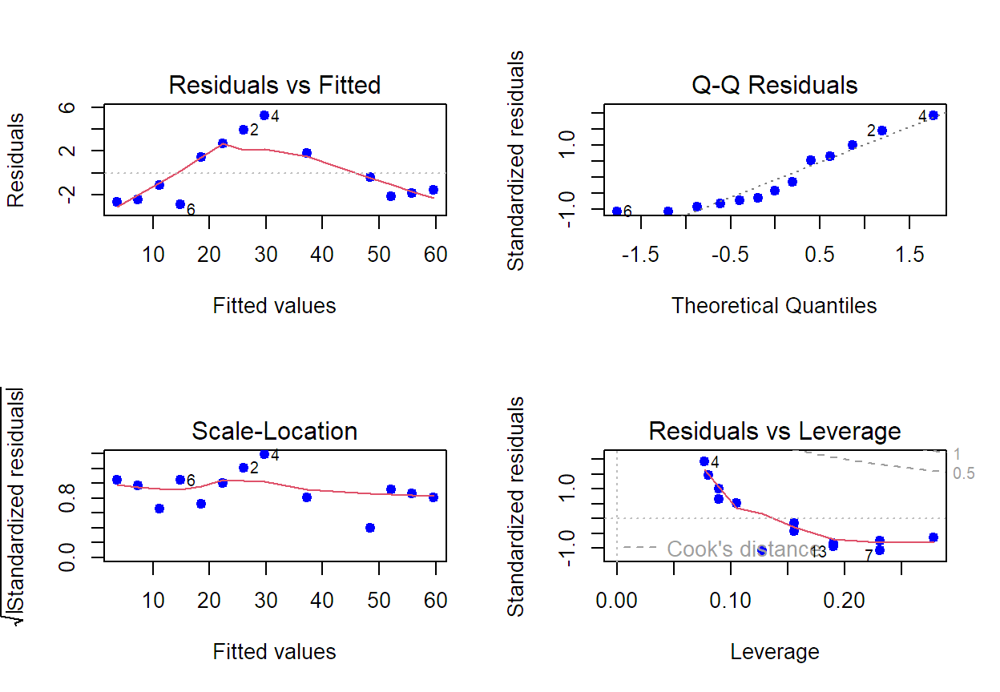

Code
Dosis<-c(75,275,50,250,325,350,425,300,125,100,200,375,400)
Daño<-c(54,30,58,35,20,12,1,25,48,50,39,10,5)
A<-data.frame(Dosis,Daño)Los modelos de regresión son un conjunto de técnicas estadísticas utilizadas para entender la relación entre una variable dependiente y una o más variables independientes. Este método permite predecir el comportamiento de la variable dependiente a partir de cambios en las variables independientes, siendo fundamental en diversas disciplinas como la economía, la biología y la ingeniería. Al aplicar un modelo de regresión sobre un conjunto de datos, se pueden identificar patrones y tendencias en los datos, facilitando la toma de decisiones informadas y la elaboración de estrategias basadas en evidencia. A través de su análisis, los investigadores pueden validar hipótesis y explorar cómo diferentes factores influyen en los resultados, lo que lo convierte en una herramienta esencial.
El modelo se define según el tipo de tendencia de los datos. A continuación se muestra la estructura de la creación del modelo en R para diferentes tendencia donde la variable de respuesta es weighty la variable predictora o independiente es length:
| Tendencia | Modelo |
|---|---|
| Líneal | modelo<-lm(weight~length, data = Datos) |
| Exponencial | modelo<-lm(log(weight)~length, data = Datos) |
| Potencia | modelo<-lm(log(weight)~log(length), data = Datos) |
| logarítmica | modelo<-lm(weight~log(length), data = Datos) |
| Cuadrática | modelo<-lm(weight~length+I(length^2), data = Datos) |
Se desea probar la efectividad de un nuevo fungicida para el control de roya en trigo. Se probaron distintas dosis en gramos del principio activo del producto por ha (gr.p.a./ha) en 13 parcelas de 100 plantas cada una. A los 15 días de la aplicación se realizó una evaluación del daño en términos del tamaño promedio de las machas en hoja bandera (Di Rienzo. Estadística para ciencias agropecuarias). Los resultados se muestran en la siguiente tabla:
| Dosis | Daño |
|---|---|
| 75 | 54 |
| 275 | 30 |
| 50 | 58 |
| 250 | 35 |
| 325 | 20 |
| 350 | 12 |
| 425 | 1 |
| 300 | 25 |
| 125 | 48 |
| 100 | 50 |
| 200 | 39 |
| 375 | 10 |
| 400 | 5 |
Generaremos dos vectores uno para cada variable independiente (X) bajo los nombres “Dosis” y otro para la variable dependiente (Y) bajo el nombre “Daño” y los agruparemos en un objeto de naturaleza tabla de datos bajo el nombre “A”.
Dosis<-c(75,275,50,250,325,350,425,300,125,100,200,375,400)
Daño<-c(54,30,58,35,20,12,1,25,48,50,39,10,5)
A<-data.frame(Dosis,Daño)Como el análisis de regresión lineal es una técnica parámetrica es necesario diágnosticar el modelo, en este caso linealidad entre X e Y, comportamiento de las variables, distribución normal de los residuales con media cero y variancia constante e independientes.
Para la linealidad realizaremos un gráfico de dispersión y así determinar de manera visual si los puntos se agrupan formando una linea recta:
library(ggplot2)
ggplot(A,aes(x = Dosis,y = Daño))+
geom_point(pch=20,size=4,)+
geom_smooth(se = FALSE,formula = 'y ~ x',method = 'loess')+
theme_classic()+
labs(x="Dosis del fungicida (g/ha)",y="Aréa de la lesión de la roya en las hojas banderas")
library(ggplot2); library(tidyverse)
ggplot(
A %>%
pivot_longer(1:2,
names_to = "Variable", values_to = "Valor"),
aes(x = Valor,fill=Variable))+
geom_histogram(bins = 5, color="black")+
facet_wrap(.~Variable, scales = "free")+
theme_classic()+
theme(legend.position = "none")+
labs(y="Frecuencia", x="Valores de la variable")
library(fitdistrplus)
f.norm <- fitdist(A$Daño, "norm")
f.lnorm <- fitdist(A$Daño, "lnorm")
f.gamma <- fitdist(A$Daño, "gamma")
f.pois <- fitdist(A$Daño, "pois")
f.nbn <- fitdist(A$Daño, "nbinom")
godfit<-gofstat(list(f.norm, f.lnorm, f.gamma, f.pois,f.nbn))
cbind(godfit$chisq,godfit$chisqdf,round(godfit$chisqpvalue,6)) [,1] [,2] [,3]
1-mle-norm 8.698768e-01 1 0.350989
2-mle-lnorm 1.005139e+00 1 0.316070
3-mle-gamma 5.093846e-01 1 0.475405
4-mle-pois 2.649780e+04 2 0.000000
5-mle-nbinom 5.312564e-01 1 0.466079Realizaremos el análisis de los residuales donde verificaremos el ajuste a la distribución normal con la función "shapiro.test()" , homocedasticidad con la función "bptest()" ubicada en la libreria "lmtest" e independecia de los residuales del modelo con la función "dwtest" ubicada en la librería "lmtest", para ello primero se debe crear el modelo y guardarlo en un objeto con el mismo nombre usando la función"lm()" de modelos lineales.
modelo<-lm(Daño~Dosis,data=A)# Normalidad de los residuales.
shapiro.test(modelo$residuals)
Shapiro-Wilk normality test
data: modelo$residuals
W = 0.88771, p-value = 0.09078#Homocedasticidad-varianza constante.
library(lmtest)
bptest(modelo)
studentized Breusch-Pagan test
data: modelo
BP = 0.42542, df = 1, p-value = 0.5142#Independencia
dwtest(modelo,alternative="two.sided")
Durbin-Watson test
data: modelo
DW = 2.3774, p-value = 0.5769
alternative hypothesis: true autocorrelation is not 0#Gráficas
par(mfrow=c(2,2))
plot(modelo, pch=19, col="blue")
Al realizar el análisis de los residuales del modelo, el test de normalidad shapiro & wilks verificó un ajuste de los residuales del modelo a la distribución normal, \(\ W(13)=0.89, p=0.09\); además, el test de Breusch-Pagan corroboró que los residuales se distribuyen con varianza constante,\(\ BP(1)=0.42, p=0.51\) y por último el test de Durbin - Watson arrojó que no existe autocorrelación significativa en los residuales de orden 1, \(\ DW=2.38, p=0.59\), por lo que desde el punto de vista estadístico podemos proceder con el análisis de regresión lineal para responder a la pregunta ¿Cuál es la relación que existe entre la dosis del fungicida y el daño foliar ocacionado por la roya de trigo en a hojas banderas? y contrastar las hipótesis, \(\ H_0:\) No existe relación lineal entre la dosis del fungicida y el daño en ocacionado por la roya de trigo en la hojas banderas vs \(\ H_1:\) Existe relación lineal entre la dosis del fungicida y el daño foliar ocacionado por la roya de trigo en la hojas banderas.
Para dar respuesta a nuestras hipótesis de contrastes en base a la información suministrada, usaremos la función "summary()" que nos permitirá observar la tabla de inferencia de los parámetros de nuestro modelo y así contrastar si los betas son diferentes de cero, de manera concreta para nuestro poblema tenemos:
Para \(\beta_0\) - Intercepto.
\(\ H_0:\) La recta pasa por el origen, es decir que el daño ocacionado por la roya en la hojas banderas de plántulas de trigo es cero sin aplicar el fungicida.
\(\ H_1:\) La recta no pasa por el origen, es decir que el daño ocacionado por la roya en la hojas banderas de plántulas de trigo es diferente de cero sin aplicar el fungicida.
Para \(\beta_1\) - Pendiente.
\(\ H_0:\) La pendiente es cero, es decir que la dosis del fungicida no influye de manera lineal en el daño ocasionado por la roya en la hojas banderas del trigo.
\(\ H_1:\) La pendiente es diferente de cero, es decir que la dosis del fungicida influye de manera lineal en el daño ocasionado por la roya en la hojas banderas del trigo.
Adicionalmente con la función "cor.test()" evaluaremos la significancia de la relación entre X e Y, y con la función "confit()" estimaremos el valor de cada uno de los parámetros del modelo por intervalos con un 95% de confianza. :::
summary(modelo)
Call:
lm(formula = Daño ~ Dosis, data = A)
Residuals:
Min 1Q Median 3Q Max
-2.864 -2.128 -1.137 1.778 5.231
Coefficients:
Estimate Std. Error t value Pr(>|t|)
(Intercept) 67.033382 1.774572 37.77 5.41e-13 ***
Dosis -0.149057 0.006363 -23.43 9.74e-11 ***
---
Signif. codes: 0 '***' 0.001 '**' 0.01 '*' 0.05 '.' 0.1 ' ' 1
Residual standard error: 2.837 on 11 degrees of freedom
Multiple R-squared: 0.9804, Adjusted R-squared: 0.9786
F-statistic: 548.8 on 1 and 11 DF, p-value: 9.737e-11cor.test(x = Dosis, y=Daño,data=A)
Pearson's product-moment correlation
data: Dosis and Daño
t = -23.427, df = 11, p-value = 9.737e-11
alternative hypothesis: true correlation is not equal to 0
95 percent confidence interval:
-0.9971316 -0.9663039
sample estimates:
cor
-0.9901267 confint(modelo) 2.5 % 97.5 %
(Intercept) 63.1275757 70.9391878
Dosis -0.1630606 -0.1350526El analisis de correlación reveló que existe una relación lineal significativa inversa fuerte entre la dosis del fungicida en (g/ha) y el daño foliar en las hojas banderas que ocaciona la roya en el trigo, \(\ t(11)=-23.43, p<0.001, r=-0.99\). A su vez la prueba F arrojada por análisis de regresión determinó que es posible explicar con un modelo de regresión lineal el efecto de la dosis del fungicida sobre la magnitud del daño foliar que ocaciona la roya de trigo, \(\ F(1,11)=548.8, p<0.001\), con un daño foliar significativo por defecto que se estima en IC95%[63.13 - 70.94], \(\ t(11)=37.77, p<0.001\), y un efecto positivo del fungicida sobre el daño, donde por cada g/ha que aumenta la dosis se estima una disminución del daño foliar en IC95%[0.13: 0.16], \(\ t(11)=-23.43, p<0.001\), teniendo así la siguiente ecuación para predecir el daño foliar en la hojas banderas con dosis de aplicación del fungicida entre 50 y 425 gr/ha con un ajuste del 98%, \(\widehat{Daño}=67.033-0.149*Dosis\).
library(ggplot2);library(ggpubr)
ggplot(A,aes(x = Dosis,y = Daño))+
geom_point(pch=20,size=4,)+
geom_smooth(se = TRUE,formula = 'y ~ x',method = 'lm', alpha=0.3, fill="lightblue")+
theme_classic()+
labs(x="Dosis del fungicida (g/ha)",y="Aréa de la lesión de la roya en las hojas banderas")+
stat_regline_equation(aes(label = paste(..eq.label.., ..adj.rr.label..,
sep = "~~~~~")),
label.x = 300, label.y = 60)#Efecto
library(effectsize)
omega_squared(modelo)# Effect Size for ANOVA
Parameter | Omega2 | 95% CI
---------------------------------
Dosis | 0.98 | [0.94, 1.00]
- One-sided CIs: upper bound fixed at [1.00].#potencia
library(pwr)
pwr.f2.test(u = 1,v = 11, f2 = 0.98,sig.level = 0.05) #Retrospectiva
Multiple regression power calculation
u = 1
v = 11
f2 = 0.98
sig.level = 0.05
power = 0.9004923pwr.f2.test(u = 1, f2 = 0.98,sig.level = 0.05,power = 0.8) #prospectiva
Multiple regression power calculation
u = 1
v = 8.333272
f2 = 0.98
sig.level = 0.05
power = 0.8# Calculo de n
1+9+1[1] 11